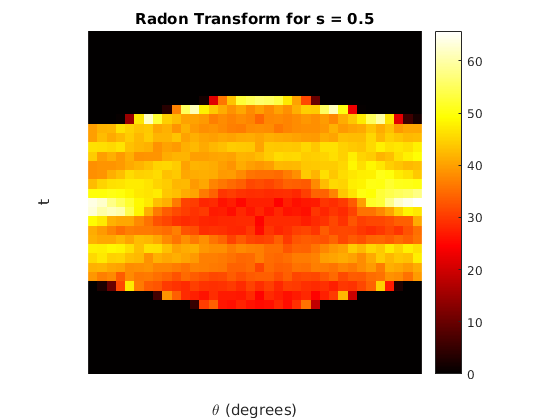
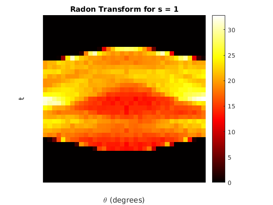
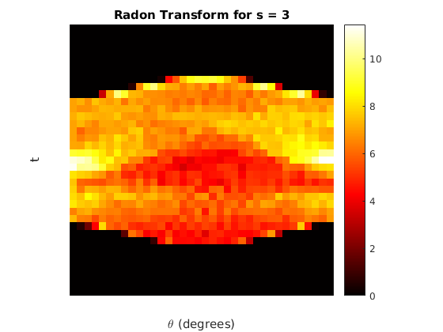
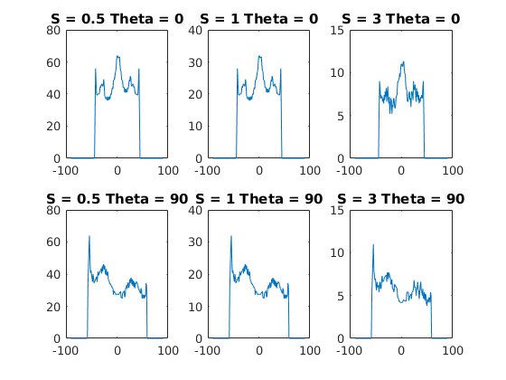
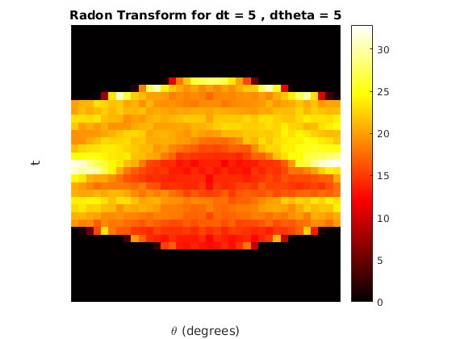
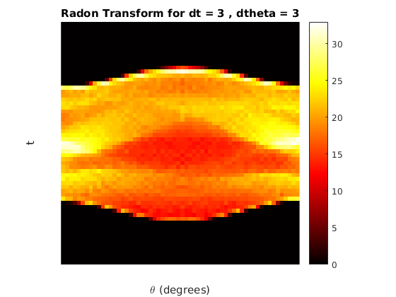
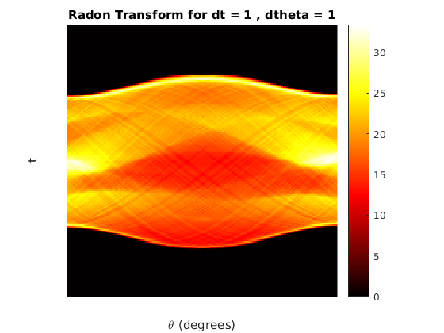

Contents
function [ output_args ] = myRadonTrans()
PART 1b
imageXY = phantom(128);
radonTrans1 = zeros(37, 36);
radonTrans2 = zeros(37, 36);
radonTrans3 = zeros(37, 36);
theta1 = 0:5:175;
t1 = -90:5:90;
ds = 0.5;
for t = -90:5:90,
for theta = 0:5:177,
radonTrans1((t/5 + 19), (theta/5 + 1)) = myIntegration(imageXY, t, theta, ds);
end;
end;
figure;
imshow(radonTrans1,[],'Xdata',theta1,'Ydata',t1','InitialMagnification','fit')
xlabel('\theta (degrees)')
ylabel('t')
colormap(gca,hot), colorbar
title('Radon Transform for s = 0.5');
ds = 1;
for t = -90:5:90,
for theta = 0:5:175,
radonTrans2(t/5 + 19, theta/5 + 1) = myIntegration(imageXY, t, theta, ds);
end;
end;
figure;
imshow(radonTrans2,[],'Xdata',theta1,'Ydata',t1','InitialMagnification','fit')
xlabel('\theta (degrees)')
ylabel('t')
colormap(gca,hot), colorbar
title('Radon Transform for s = 1');
ds = 3;
for t = -90:5:90,
for theta = 0:5:175,
radonTrans3(t/5 + 19, theta/5 + 1) = myIntegration(imageXY, t, theta, ds);
end;
end;
figure;
imshow(radonTrans3,[],'Xdata',theta1,'Ydata',t1','InitialMagnification','fit')
xlabel('\theta (degrees)')
ylabel('t')
colormap(gca,hot), colorbar
title('Radon Transform for s = 3');
PART 1c
oneDPlots(imageXY);
PART 1d
ds = 1;
figure;
imshow(radonTrans2,[],'Xdata',theta1,'Ydata',t1','InitialMagnification','fit')
xlabel('\theta (degrees)')
ylabel('t')
colormap(gca,hot), colorbar
title('Radon Transform for dt = 5 , dtheta = 5');
radonTrans1 = zeros(61, 60);
theta1 = 0:3:177;
t1 = -90:3:90;
for t = -90:3:90,
for theta = 0:3:177,
radonTrans1((t/3 + 31), (theta/3 + 1)) = myIntegration(imageXY, t, theta, ds);
end;
end;
figure;
imshow(radonTrans1,[],'Xdata',theta1,'Ydata',t1','InitialMagnification','fit')
xlabel('\theta (degrees)')
ylabel('t')
colormap(gca,hot), colorbar
title('Radon Transform for dt = 3 , dtheta = 3');
radonTrans3 = zeros(181, 180);
theta3 = 0:1:179;
t3 = -90:1:90;
for t = -90:1:90,
for theta = 0:1:179,
radonTrans3((t + 91), (theta + 1)) = myIntegration(imageXY, t, theta, ds);
end;
end;
figure;
imshow(radonTrans3,[],'Xdata',theta3,'Ydata',t3','InitialMagnification','fit')
xlabel('\theta (degrees)')
ylabel('t')
colormap(gca,hot), colorbar
title('Radon Transform for dt = 1 , dtheta = 1');
end
      